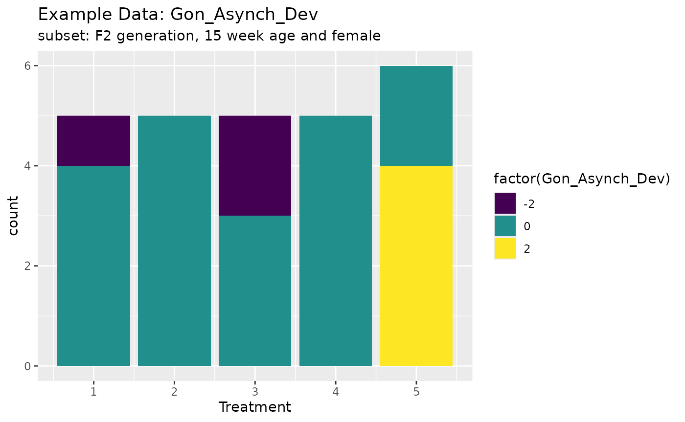
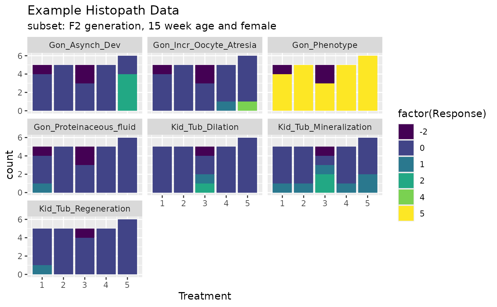
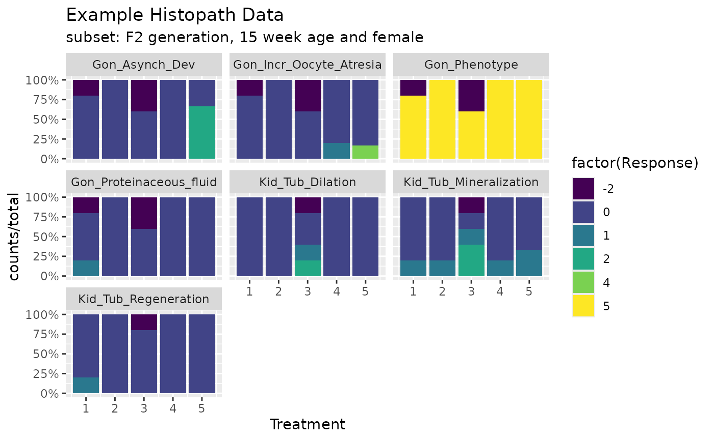

An example of performing the Rao-Scott Adjusted Cochran-Armitage Trend Test by Slices.
RSCABS: designed to analyze histopathological results from standard toxicology experiments, for example the MEOGRT.
Steps in the testing procedure:
1.The Cochran-Armitage (CA) trend test was used to test a set of organisms for an increase in the presences (score > 0) or absence (score = 0) of an effect with an increase in the dose concentration of the treatments. 2. The Rao-Scott (RS) adjustment controls for the similarity in each experiment unit / apparatus (e.g., fish tank) by calculating an adjustment to the CA test statistic from correlation of organisms within each apparatuses. 3. The by slices (BS) part allows for testing at each severity score (e.g., from 1 to 5) instead of just presences or absence. By slices works by splitting the severity scores associated with an endpoint into two groups based on the severity score being tested. The RSCA test statistic is calculated based on these two groups. 4. Carry out a step-down procedure by excluding the highest treatment level in the analysis and recalculate the RSCA test statistic until the test stats is not significant or there is only control group left.
Notes on RSCABS
- Select responses maximum value should be > 0 and smaller than 20??
- for each to be tested response/endpoints, convert2score
- for each to be tested response/endpoints, prepDataRSCABS, prepare the data into matrix/table format, treatment as column, replicate as row
- for each to be tested response/endpoints, stepKRSCABS.
$Gon_Asynch_Dev
Effect Treatment R.Score Statistic P.Value Signif
1 Gon_Asynch_Dev1 5 1 2.622022 0.004370488 **
2 Gon_Asynch_Dev1 4 1 NaN 1.000000000 .
3 Gon_Asynch_Dev1 4 1 NaN 1.000000000 .
4 Gon_Asynch_Dev2 5 2 2.622022 0.004370488 **
5 Gon_Asynch_Dev2 4 2 NaN 1.000000000 .
6 Gon_Asynch_Dev2 4 2 NaN 1.000000000 .- combine the results into a big matrix.
## Loading required package: drc## Loading required package: MASS##
## 'drc' has been loaded.## Please cite R and 'drc' if used for a publication,## for references type 'citation()' and 'citation('drc')'.##
## Attaching package: 'drc'## The following objects are masked from 'package:stats':
##
## gaussian, getInitial## ── Attaching core tidyverse packages ──────────────────────── tidyverse 2.0.0 ──
## ✔ dplyr 1.1.4 ✔ readr 2.1.5
## ✔ forcats 1.0.0 ✔ stringr 1.5.1
## ✔ ggplot2 3.5.1 ✔ tibble 3.2.1
## ✔ lubridate 1.9.4 ✔ tidyr 1.3.1
## ✔ purrr 1.0.2## ── Conflicts ────────────────────────────────────────── tidyverse_conflicts() ──
## ✖ dplyr::filter() masks stats::filter()
## ✖ dplyr::lag() masks stats::lag()
## ✖ dplyr::select() masks MASS::select()
## ℹ Use the conflicted package (<http://conflicted.r-lib.org/>) to force all conflicts to become errors
data("exampleHistData")
exampleHistData <- exampleHistData %>% as_tibble %>% mutate(across(where(is.integer),as.numeric)) %>% as.data.frame(.)
#Take the subset corresponding to F0-females of 16 weeks of age
subIndex<-which(exampleHistData$Generation=='F2' &
exampleHistData$Genotypic_Sex=='Female' &
exampleHistData$Age=='16_wk' )
exampleHistData.Sub<-exampleHistData[subIndex, ]
#Run RSCABS
exampleResults<-runRSCABS(exampleHistData.Sub,'Treatment',
'Replicate',test.type='RS')| Effect | Treatment | R.Score | Statistic | P.Value | Signif |
|---|---|---|---|---|---|
| Gon_Incr_Oocyte_Atresia1 | 5 | 1 | 1.330 | 0.092 | . |
| Gon_Incr_Oocyte_Atresia1 | 5 | 1 | 1.330 | 0.092 | . |
| Gon_Incr_Oocyte_Atresia2 | 5 | 2 | 1.231 | 0.109 | . |
| Gon_Incr_Oocyte_Atresia2 | 5 | 2 | 1.231 | 0.109 | . |
| Gon_Incr_Oocyte_Atresia3 | 5 | 3 | 1.231 | 0.109 | . |
| Gon_Incr_Oocyte_Atresia3 | 5 | 3 | 1.231 | 0.109 | . |
| Gon_Incr_Oocyte_Atresia4 | 5 | 4 | 1.231 | 0.109 | . |
| Gon_Incr_Oocyte_Atresia4 | 5 | 4 | 1.231 | 0.109 | . |
| Gon_Proteinaceous_fluid1 | 5 | 1 | -1.410 | 0.079 | . |
| Gon_Proteinaceous_fluid1 | 5 | 1 | -1.410 | 0.079 | . |
| Gon_Asynch_Dev1 | 5 | 1 | 2.622 | 0.004 | ** |
| Gon_Asynch_Dev2 | 5 | 2 | 2.622 | 0.004 | ** |
| Kid_Tub_Mineralization1 | 5 | 1 | 0.358 | 0.360 | . |
| Kid_Tub_Mineralization1 | 5 | 1 | 0.358 | 0.360 | . |
| Kid_Tub_Mineralization2 | 5 | 2 | -0.070 | 0.472 | . |
| Kid_Tub_Mineralization2 | 5 | 2 | -0.070 | 0.472 | . |
| Kid_Tub_Dilation1 | 5 | 1 | -0.070 | 0.472 | . |
| Kid_Tub_Dilation1 | 5 | 1 | -0.070 | 0.472 | . |
| Kid_Tub_Dilation2 | 5 | 2 | -0.049 | 0.480 | . |
| Kid_Tub_Dilation2 | 5 | 2 | -0.049 | 0.480 | . |
| Kid_Tub_Regeneration1 | 5 | 1 | -1.375 | 0.085 | . |
| Kid_Tub_Regeneration1 | 5 | 1 | -1.375 | 0.085 | . |
ggplot(exampleHistData.Sub,aes(x=Treatment,fill=factor(Gon_Asynch_Dev)))+geom_bar()+scale_fill_viridis_d()+labs(title="Example Data: Gon_Asynch_Dev",subtitle = "subset: F2 generation, 15 week age and female")
# xlab<-'Group'
# ylab<-'Total Fish'
# main<-'Example Graph for \n Example Data and Gon_Asynch_Dev'
# col<-c('purple1','red3')
# Metric="Total"
# Lowest ="Include"
# # PlotParms<-list()
# # PlotParms$xlab<-'Group'
# # PlotParms$ylab<-'Total Fish'
# # PlotParms$main<-'Example Graph for \n Example Data and Gon_Asynch_Dev'
# # PlotParms$Colors<-c('purple1','red3')
# plotRSCABS(Data=exampleHistData.Sub, Effect="Gon_Asynch_Dev",
# Treatment="Treatment", Metric="Total", Lowest = "Include",
# #PlotParms =PlotParms,
# Format = NULL, File = NULL,
# xlab=xlab,main=main,ylab=ylab,col=col)
# ####################
# col <- c("purple","green","black")
# plotRSCABS(Data=exampleHistData.Sub, Effect="Gon_Incr_Oocyte_Atresia",
# Treatment="Treatment", Metric="Total", Lowest = "Include",
# #PlotParms =PlotParms,
# Format = NULL, File = NULL,
# xlab=xlab,main=main,ylab=ylab,col=col)
cids <-which(apply(exampleHistData.Sub[,-(1:5)],2,max)>0)
responses <- names(cids)
ggplot(exampleHistData.Sub[,c(1:5,5+cids)]%>%tidyr::pivot_longer(-(1:5),values_to = "Response",names_to = "Endpoint"),aes(x=Treatment,fill=factor(Response)))+geom_bar()+scale_fill_viridis_d()+labs(title="Example Histopath Data",subtitle = "subset: F2 generation, 15 week age and female")+facet_wrap(~Endpoint)
library(scales)
#>
#> Attaching package: 'scales'
#> The following object is masked from 'package:purrr':
#>
#> discard
#> The following object is masked from 'package:readr':
#>
#> col_factor
dat1 <- exampleHistData.Sub[,c(1:5,5+cids)]%>%tidyr::pivot_longer(-(1:5),values_to = "Response",names_to = "Endpoint") %>% group_by(Endpoint,Treatment,Response) %>% summarise(counts=n())%>% group_by(Endpoint,Treatment) %>% mutate(total=sum(counts))
#> `summarise()` has grouped output by 'Endpoint', 'Treatment'. You can override
#> using the `.groups` argument.
ggplot(dat1,aes(x=Treatment,fill=factor(Response)))+geom_bar(aes(y=counts/total),stat = "identity")+scale_fill_viridis_d()+labs(title="Example Histopath Data",subtitle = "subset: F2 generation, 15 week age and female")+facet_wrap(~Endpoint,drop = T)+ scale_y_continuous(labels = percent)
References
- Agresti, A. (2002) Categorical Data Analysis, Second Edition. Hoboken, New Jersey: John Wiley & Sons, Inc.
- Harrell, F. E, (2001) Regression Modeling Strategies. New York: Springer-Verlag.
- http://www.sthda.com/english/articles/32-r-graphics-essentials/132-plot-grouped-data-box-plot-bar-plot-and-more/